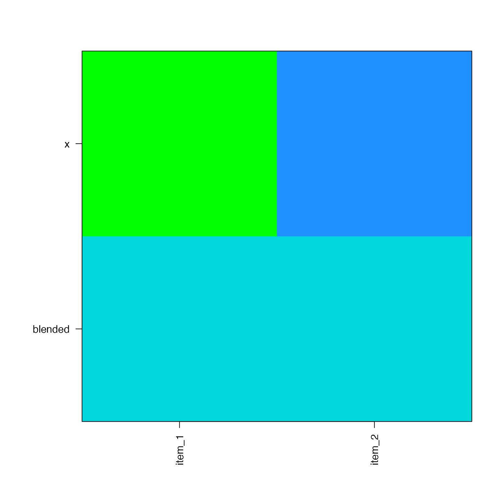
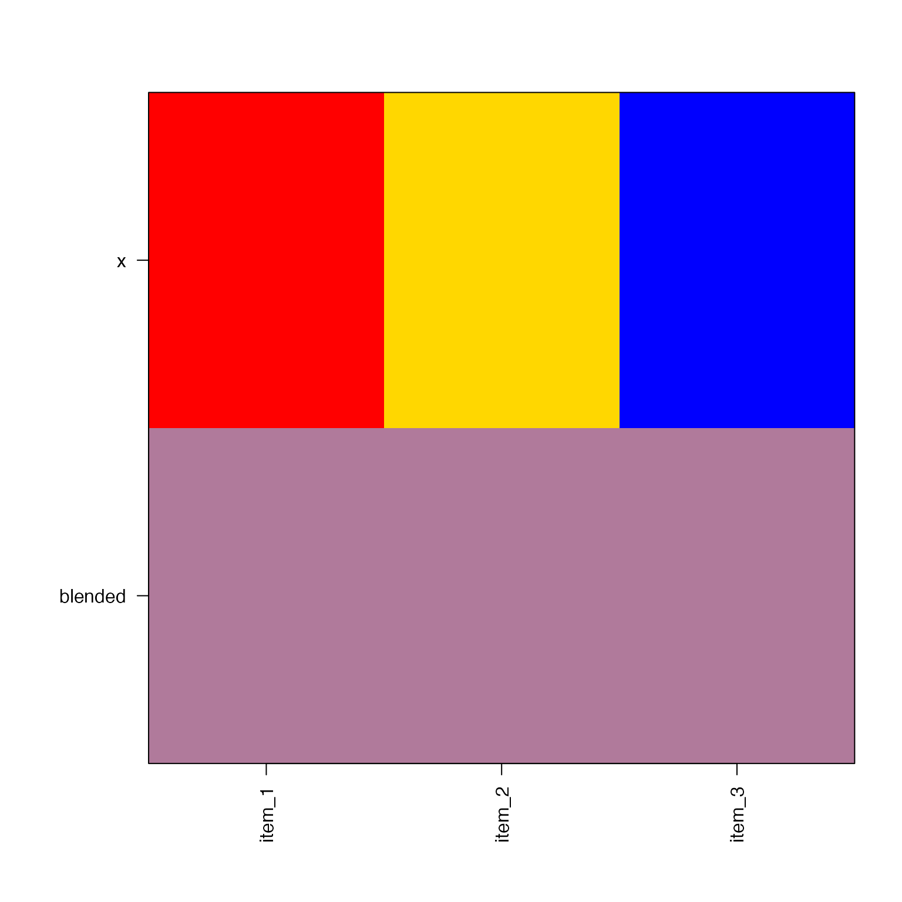
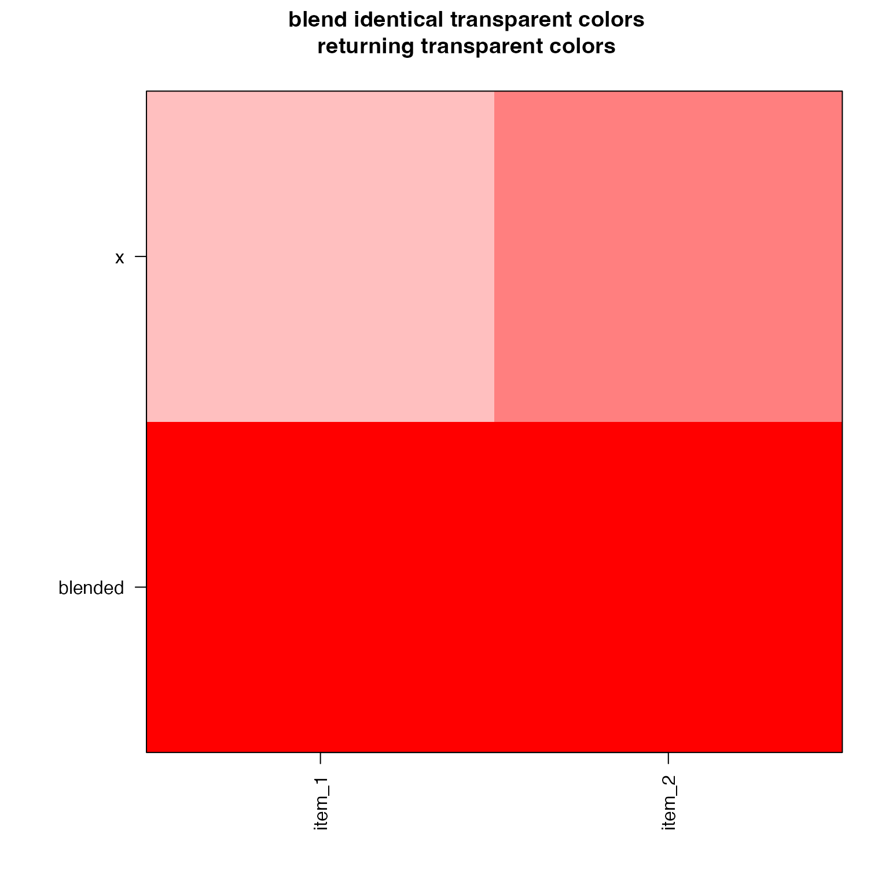

Blend multiple colors
blend_colors( x, preset = c("ryb", "none", "dichromat", "rgb", "ryb2"), h1 = NULL, h2 = NULL, do_plot = FALSE, lens = 0, c_weight = 0.2, ... )
Arguments
| x |
|
|---|---|
| preset |
|
| do_plot |
|
| lens |
|
| c_weight |
|
| ... | additional arguments are ignored. |
Value
character vector with blended color; when input x
is a list the returned vector will have length length(x).
Details
This function is intended to blend two or more colors, by default using "paint mixing" style, similar to subtractive color mixing. It accomplishes this goal by using a red-yellow-blue color wheel (very similar to cyan-yellow-magenta), then determines the average color hue with appropriate loss of color saturation.
This function also utilized color transparency, applied internally as relative color weights, during the color mixing process.
This function blends multiple colors, including several useful features:
color wheel red-yellow-blue, subtractive color mixing
can blend more than two colors at once
accounts for transparency of individual colors
The basic design guide was to meet these expectations:
red + yellow = orange
blue + yellow = green
red + blue = purple
blue + red + yellow = some brown/gray substance
The input x can be a vector of colors, or a list. When
x is a list then the unique vectors are blended, returning
a vector with length length(x).
The default additive color mixing, with red-green-blue colors used in electronic monitors, does not meet these criteria. (In no logical paint mixing exercise would someone expect that mixing red and green would make yellow; or that blue and yellow would make grey.)
In general the function performs well, with some exceptions
where the color hue angle is not well-normalized opposite
its complementary color, and therefore does not make the
expected "brownish/grey" output. Examples include
blend_colors(c("yellow", "purple")) which is closer
to blue + yellow = green, because purple is also composed
of blue with some red. Indeed, the R color hue for purple
is 283; the hue for blue is 266; the hue for red is 12 (372);
which means purple is substantially closer to blue than red.
A suitable workaround in this case is to use
blend_colors(c("yellow", "deeppink4")).
Examples
#> [1] "#F6A95CFF"#> [1] "#13A37AFF"#> [1] "#A50686FF"#> [1] "#00BCCAFF"#> [1] "#00D7DFFF"#> [1] "#AE7F77FF"#> [1] "#96754BFF"#> [1] "#B28271FF"#> [1] "#855068FF"